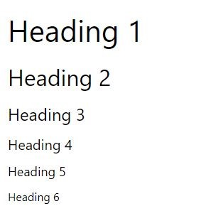

Essa tag é responsavel por titulos ou topicos, disponivel em 6 tamanhos sendo ele do Maior para o menor
Referencia: Tag H1 a H6
Essa tag serve para marcar um parafraso em uma frase ou texto
Referencia: Tag P
Essa tag serve para marcar algo em negrito
Referencia: Tag B
Essa tag cria uma pequena barra horizontal na tela
Referencia: Tag HR